Seleção e Visualização de Dados Vetoriais¶
Nos capítulos anteriores vimos os conceitos básicos da plataforma e os tipos de dados geográficos. A partir de agora, vamos trabalhar com dados reais: neste capítulo, veremos como acessar, visualizar e selecionar dados vetoriais — seja do catálogo do GEE, seja de arquivos enviados por você.
📥 Acessando dados vetoriais¶
Do catálogo do GEE¶
O catálogo do Google Earth Engine é composto predominantemente por dados matriciais, mas inclui algumas coleções vetoriais, como limites de países e conjuntos de dados fornecidos principalmente por agências dos Estados Unidos. Para encontrá-los, digite um termo na caixa de busca do Code Editor — por exemplo, countries:
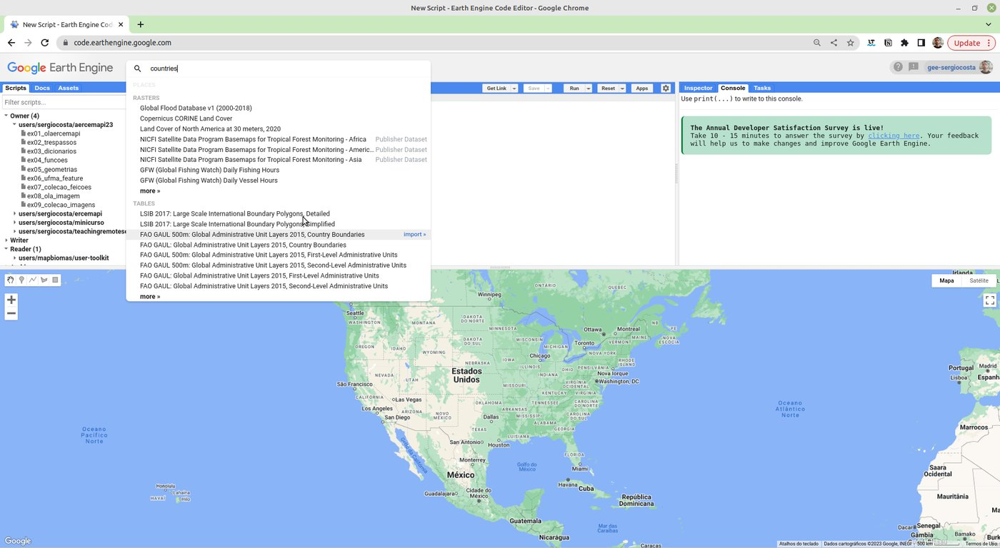
Clique em um dos resultados, como o LSIB 2017: Large Scale International Boundary Polygons:
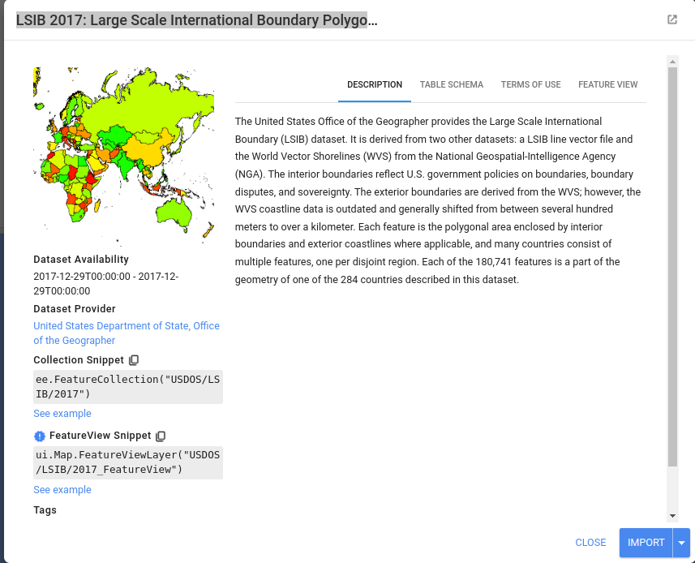
A partir dessa tela, há duas formas de carregar os dados. A primeira é clicar em Import: o conjunto aparece como uma variável (table) na seção de imports do script.
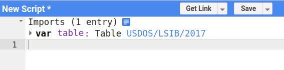
Map.addLayer(table);
Map.setCenter(-37.77028535227355, -4.567792298842188, 1); // zoom 1: o mundo todo
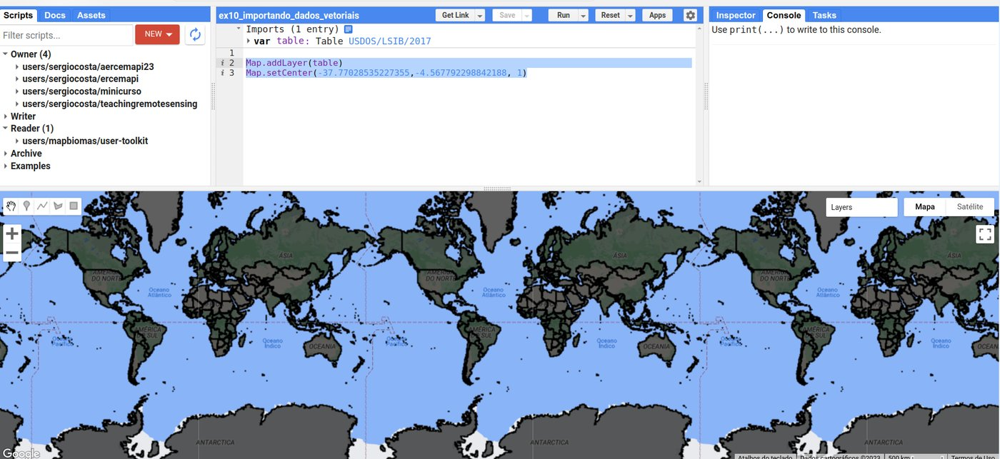
A segunda forma é copiar o trecho de código indicado em Collection Snippet, que contém o identificador (ID) do conjunto:
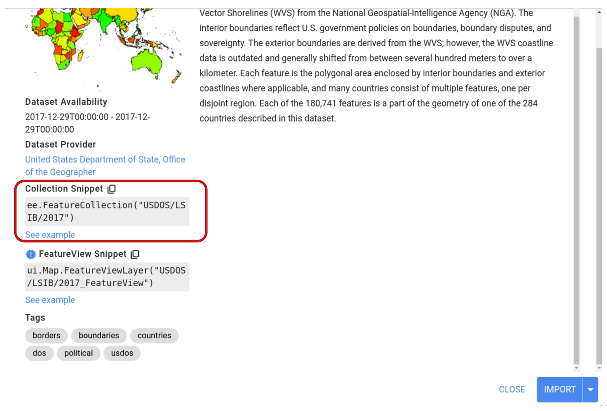
var paises = ee.FeatureCollection('USDOS/LSIB_SIMPLE/2017');
Map.addLayer(paises, {}, 'Países');
Map.setCenter(-47.92, -15.80, 3); // centralizando em Brasília
Essa segunda forma é mais fácil de copiar e colar em outros scripts, e é a que usaremos no restante do livro.
Enviando seus próprios dados (assets)¶
Como o catálogo tem poucas coleções vetoriais, é comum importar dados de outras fontes, no formato Shapefile (também aceitos: CSV com coordenadas e, via Google Cloud, outros formatos). No Brasil, o portal do IBGE disponibiliza as malhas territoriais de todo o país — veja outras fontes em Fontes de Dados Geográficos.
O formato Shapefile
O Shapefile (ou ESRI Shapefile) é um padrão amplamente usado para armazenar dados vetoriais e se tornou um formato comum para compartilhar dados geoespaciais. Apesar do nome no singular, um shapefile é um conjunto de arquivos com o mesmo nome e extensões diferentes: .shp (geometrias), .shx (índice), .dbf (atributos) e .prj (sistema de referência). Os quatro são necessários — envie-os juntos ou compactados em um .zip.
1. Baixe a malha de municípios do Maranhão no portal Malha Municipal — IBGE.
2. Envie o arquivo ao GEE. Na aba Assets, clique em NEW e escolha Shape files. Na janela que se abre, clique em SELECT para escolher os arquivos (ou o .zip), dê um nome ao asset e clique em UPLOAD. O andamento do envio aparece na aba Tasks.
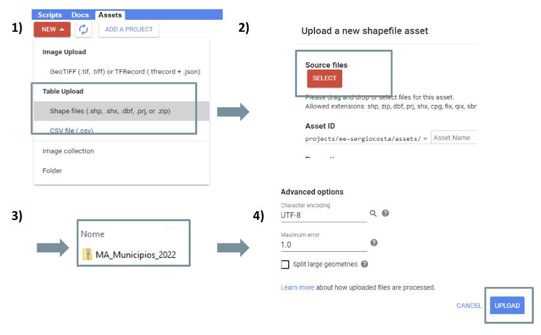
3. Copie o identificador. Após o envio, o dado aparece na aba Assets. Clique nele para ver seus detalhes e copiar o identificador (Table ID):
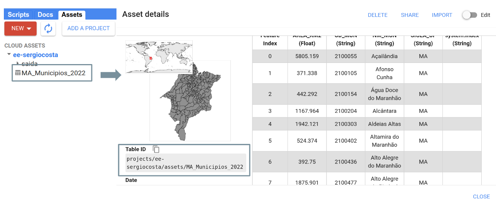
Com o identificador, os dados são carregados como qualquer outro conjunto do catálogo:
var municipios = ee.FeatureCollection(
'projects/ee-sergiocosta/assets/MA_Municipios_2022'
);
Map.addLayer(municipios, {}, 'Municípios do MA');
Map.centerObject(municipios, 6);
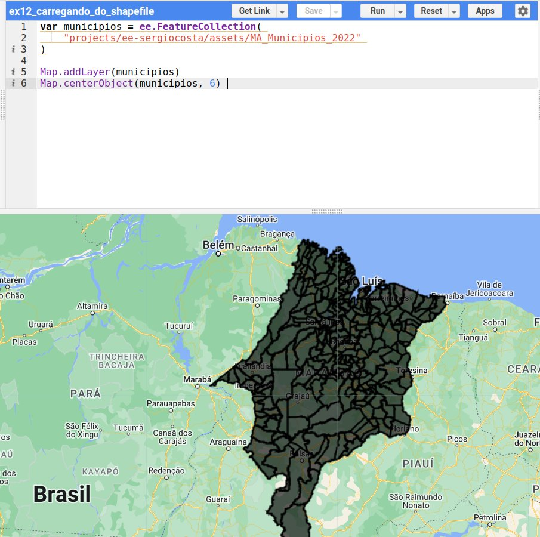
Use o identificador do seu asset
Os exemplos deste livro usam os assets do projeto do autor (projects/ee-sergiocosta/assets/...). Ao reproduzi-los, envie os dados para o seu projeto e substitua o identificador pelo seu — algo como projects/ee-seunome/assets/MA_Municipios_2022. Os dados usados nos exemplos estão disponíveis para download:
- Municípios do Maranhão: Malha Municipal — IBGE (arquivo
MA_Municipios_2022); - Unidades federativas com o código numérico da região: BR_UF.zip (versão simplificada, preparada para este livro);
- Limites da Amazônia Legal: Amazônia Legal — IBGE;
- Polos madeireiros e terras indígenas (Capítulo 7): polos_madeireiros_mma.zip e terras_indigenas.zip.
🎨 Visualização dos dados vetoriais¶
Ao adicionar dados vetoriais com Map.addLayer(municipios), eles aparecem em preto. O segundo parâmetro de Map.addLayer é um dicionário de parâmetros de visualização, e o terceiro é o nome da camada no gerenciador de camadas (Layers):
var municipios = ee.FeatureCollection(
'projects/ee-sergiocosta/assets/MA_Municipios_2022'
);
Map.addLayer(municipios, {color: 'FF0000'}, 'Municípios em vermelho');
Map.centerObject(municipios, 6);
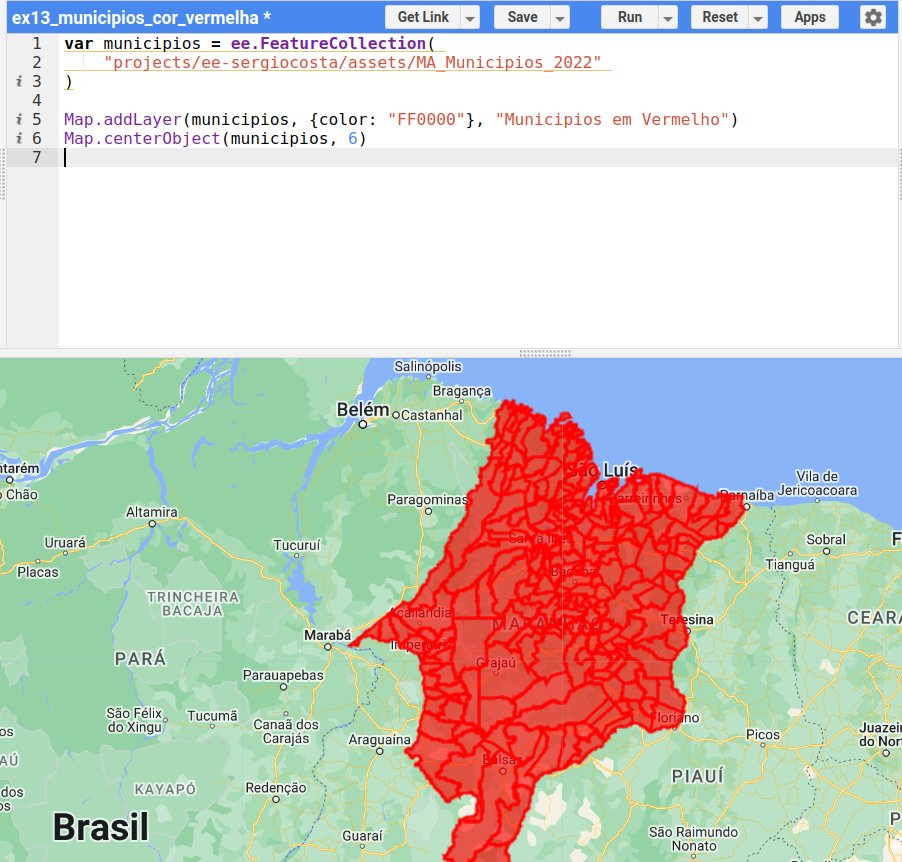
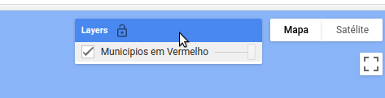
Encontrando o código de uma cor
As cores são indicadas por códigos hexadecimais RGB (RRGGBB). Há vários sites que retornam o código de uma cor, e a própria busca do Google oferece um seletor — pesquise por seletor de cores ou color picker:
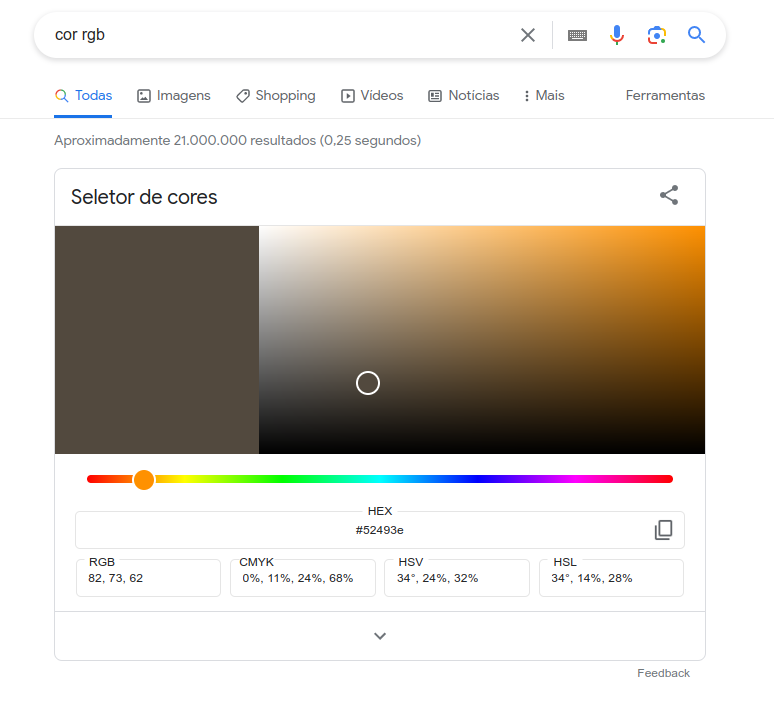
Com o parâmetro color, a borda e o preenchimento ficam na mesma cor. Para um controle mais detalhado, use o método .style() da coleção, que permite definir a cor e a largura da borda, a cor do preenchimento, o tipo de linha, entre outros:
var municipios = ee.FeatureCollection(
'projects/ee-sergiocosta/assets/MA_Municipios_2022'
);
Map.addLayer(municipios.style({
fillColor: 'FF0000', // cor de preenchimento
color: '000000', // cor da borda
width: 1 // largura da borda
}), {}, 'Municípios');
Map.centerObject(municipios, 6);
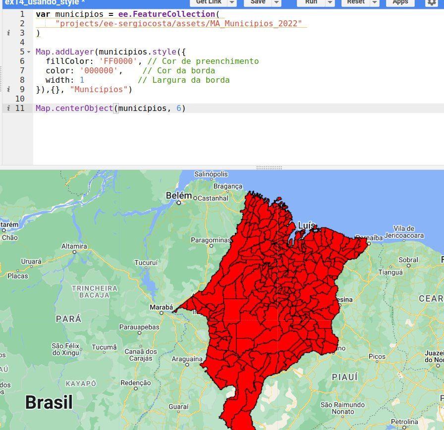
Veja todos os parâmetros em ee.FeatureCollection.style.
Transparência¶
É possível acrescentar um canal alfa (transparência) à cor, passando do formato RRGGBB para RRGGBBAA. Cada par de dígitos hexadecimais vai de 00 (0) a FF (255). No canal alfa, 00 é totalmente transparente e FF totalmente opaco. Para obter o código de uma opacidade \(p\) (em %), calcule \(\text{round}(255 \times p / 100)\) e converta para hexadecimal:
| Opacidade | 100% | 90% | 80% | 75% | 60% | 50% | 40% | 25% | 20% | 10% | 0% |
|---|---|---|---|---|---|---|---|---|---|---|---|
| Código | FF |
E6 |
CC |
BF |
99 |
80 |
66 |
40 |
33 |
1A |
00 |
Assim, abffd180 é a cor abffd1 (um verde-claro) com opacidade de 50% (80 em hexadecimal = 128 em decimal).
Mapas categóricos¶
Nos exemplos anteriores, todas as feições têm a mesma cor — uma simbologia simples. Muitas vezes, porém, precisamos de mapas categóricos, em que cada categoria recebe uma cor: tipos de uso da terra, classes de solo, divisões administrativas...
Considere a coleção de unidades federativas BR_UF.zip, em que cada UF tem um atributo numérico CD_REGIAO com o código de uma das cinco regiões do país (1 = Norte, 2 = Nordeste, 3 = Sudeste, 4 = Sul, 5 = Centro-Oeste). Para colorir por região, o truque é transformar as feições em uma imagem. Primeiro, criamos uma imagem vazia:
Em seguida, usamos o método .paint(), que recebe a coleção de feições e o atributo que definirá o valor dos pixels — neste caso, de 1 a 5:
Rasterização
O método .paint() realiza uma rasterização: converte dados vetoriais em uma matriz de pixels. O atributo usado precisa ser numérico.
Por fim, associamos uma paleta de cores aos valores: o valor 1 recebe a primeira cor da paleta, o valor 2 a segunda, e assim por diante.
var paleta = ['408F70', 'FF0000', 'E7EB1B', 'FF8C4D', '9091C8'];
Map.addLayer(regioes, {palette: paleta, min: 1, max: 5}, 'Regiões');
O código completo:
var ufs = ee.FeatureCollection('projects/ee-sergiocosta/assets/BR_UF');
Map.addLayer(ufs, {}, 'UFs');
// cores diferentes por região: é necessário trabalhar com imagens
var vazia = ee.Image().byte();
// rasterização pelo atributo numérico CD_REGIAO (1 a 5)
var regioes = vazia.paint(ufs, 'CD_REGIAO');
// os valores de 1 a 5 são associados às cores da paleta
var paleta = ['408F70', 'FF0000', 'E7EB1B', 'FF8C4D', '9091C8'];
Map.addLayer(regioes, {palette: paleta, min: 1, max: 5}, 'Regiões');
Map.centerObject(ufs, 4);
| Camada "UFs" | Camada "Regiões" |
|---|---|
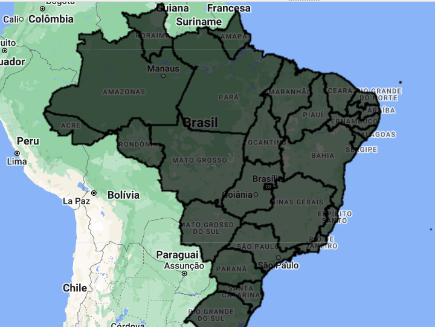 |
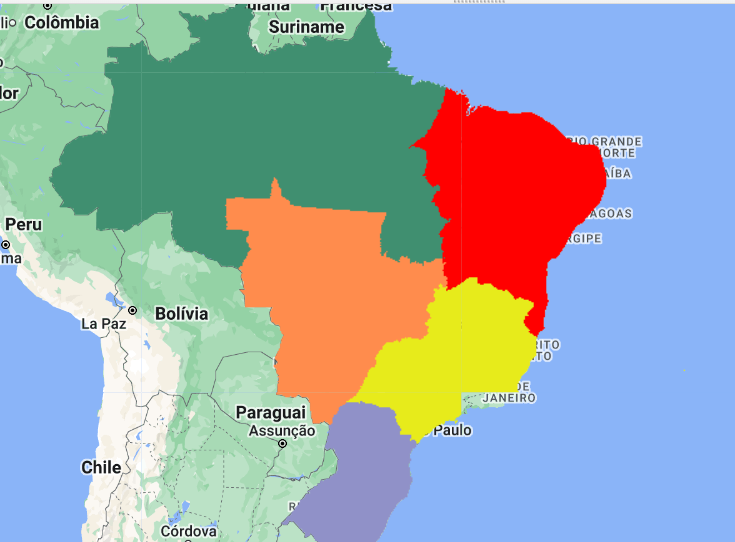 |
🔎 Seleção de dados vetoriais¶
As operações de seleção são cruciais para extrair informações relevantes de conjuntos de dados geográficos. Nos SIGs, elas permitem filtrar e consultar elementos por atributos não espaciais, por relações espaciais ou por interação direta (como clicar em um objeto). O GEE oferece grande parte dessas seleções por meio do método .filter(), que recebe um filtro (ee.Filter).
Seleção por atributos¶
A seleção por atributos filtra os elementos de uma coleção com base nos valores de seus atributos. Suponha que queremos apenas os municípios do Maranhão com mais de 8.000 km². Como a área de cada município está no atributo AREA_KM2:
var filtroArea = ee.Filter.gt('AREA_KM2', 8000); // gt = greater than (maior que)
var municipiosAcima8000 = municipios.filter(filtroArea);
Código completo:
var municipios = ee.FeatureCollection(
'projects/ee-sergiocosta/assets/MA_Municipios_2022'
);
var filtroArea = ee.Filter.gt('AREA_KM2', 8000);
var municipiosAcima8000 = municipios.filter(filtroArea);
print('Quantidade:', municipiosAcima8000.size());
Map.addLayer(municipiosAcima8000, {color: 'FF0000'}, 'Área maior que 8000 km²');
Map.centerObject(municipiosAcima8000, 6);
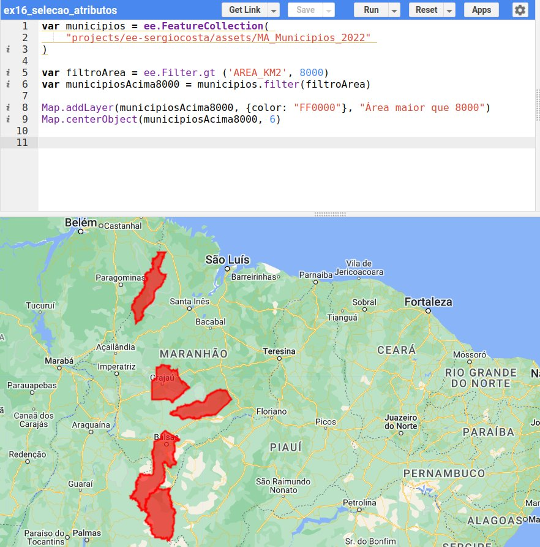
Os filtros de comparação mais comuns são:
| Filtro | Significado | Exemplo |
|---|---|---|
ee.Filter.eq(nome, valor) |
igual a | ee.Filter.eq('SIGLA_UF', 'MA') |
ee.Filter.neq(nome, valor) |
diferente de | ee.Filter.neq('NM_MUN', 'São Luís') |
ee.Filter.gt / ee.Filter.gte |
maior que / maior ou igual | ee.Filter.gte('AREA_KM2', 1000) |
ee.Filter.lt / ee.Filter.lte |
menor que / menor ou igual | ee.Filter.lt('CLOUD_COVER', 20) |
ee.Filter.inList(nome, lista) |
valor pertence à lista | ee.Filter.inList('NM_MUN', ['Caxias', 'Codó']) |
ee.Filter.and(f1, f2) / ee.Filter.or(f1, f2) |
combinação de filtros | ver Capítulo 7 |
filtro.not() |
negação | ee.Filter.gt('AREA_KM2', 8000).not() |
Seleção espacial¶
A seleção espacial filtra os elementos com base em sua localização: os que estão contidos em uma área de interesse, próximos a um ponto ou ao longo de uma linha. Considere uma coleção com os municípios do Maranhão e outra com a delimitação da Amazônia Legal:
var amazoniaLegal = ee.FeatureCollection(
'projects/ee-sergiocosta/assets/brazilian_legal_amazon'
);
var municipiosMA = ee.FeatureCollection(
'projects/ee-sergiocosta/assets/MA_Municipios_2022'
);
Queremos os municípios que tenham alguma parte do seu território dentro da Amazônia Legal (não necessariamente todo o município). O filtro ee.Filter.bounds implementa a operação de intersecção entre geometrias:
var interceptaAmazoniaLegal = ee.Filter.bounds(amazoniaLegal);
var dentroAmazonia = municipiosMA.filter(interceptaAmazoniaLegal);
Com a negação do filtro, obtemos o resultado inverso — os municípios totalmente fora da Amazônia Legal:
O código completo, apresentando cada grupo com uma cor:
// ENTRADA
var amazoniaLegal = ee.FeatureCollection(
'projects/ee-sergiocosta/assets/brazilian_legal_amazon'
);
var municipiosMA = ee.FeatureCollection(
'projects/ee-sergiocosta/assets/MA_Municipios_2022'
);
// PROCESSAMENTO
var interceptaAmazoniaLegal = ee.Filter.bounds(amazoniaLegal);
var dentroAmazonia = municipiosMA.filter(interceptaAmazoniaLegal);
var foraAmazonia = municipiosMA.filter(interceptaAmazoniaLegal.not());
// APRESENTAÇÃO/SAÍDA
Map.addLayer(dentroAmazonia.style({
fillColor: '50824e', color: '000000', width: 1
}), {}, 'Municípios na Amazônia Legal');
Map.addLayer(foraAmazonia.style({
fillColor: 'ed5d28', color: '000000', width: 1
}), {}, 'Municípios fora da Amazônia Legal');
Map.addLayer(amazoniaLegal.style({
fillColor: 'abffd180', // verde-claro com 50% de opacidade
color: '000000', width: 1
}), {}, 'Amazônia Legal');
Map.centerObject(amazoniaLegal, 6);
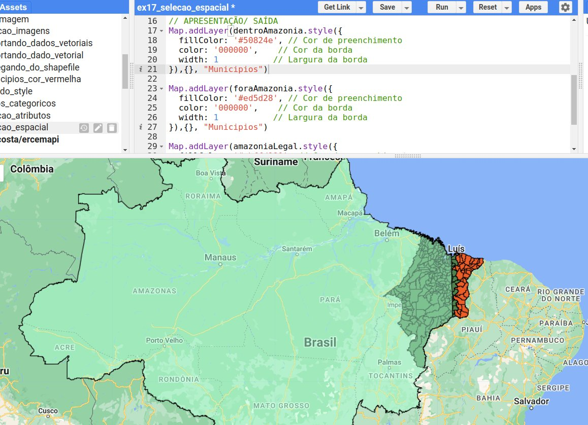
Seleção combinada¶
Filtros espaciais e de atributos podem ser encadeados. Para selecionar os municípios que estão fora da Amazônia Legal e têm mais de 3.000 km²:
// ENTRADA
var amazoniaLegal = ee.FeatureCollection(
'projects/ee-sergiocosta/assets/brazilian_legal_amazon'
);
var municipiosMA = ee.FeatureCollection(
'projects/ee-sergiocosta/assets/MA_Municipios_2022'
);
// PROCESSAMENTO
var interceptaAmazoniaLegal = ee.Filter.bounds(amazoniaLegal);
var filtroArea = ee.Filter.gt('AREA_KM2', 3000);
var selecionados = municipiosMA
.filter(interceptaAmazoniaLegal.not())
.filter(filtroArea);
// APRESENTAÇÃO/SAÍDA
Map.addLayer(selecionados.style({
fillColor: 'ed5d28', color: '000000', width: 1
}), {}, 'Fora da Amazônia Legal e > 3000 km²');
Map.addLayer(amazoniaLegal.style({
fillColor: 'abffd180', color: '000000', width: 1
}), {}, 'Amazônia Legal');
Map.centerObject(amazoniaLegal, 6);
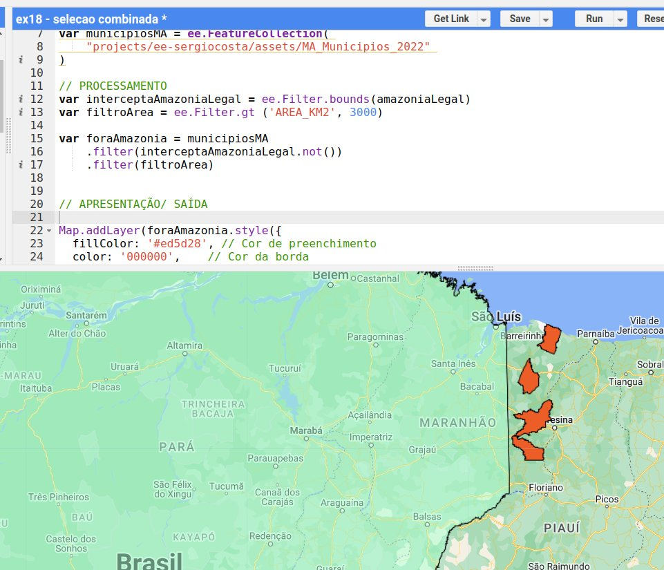
Encadear ou combinar?
Encadear dois .filter() equivale a combiná-los com E lógico. O mesmo resultado poderia ser obtido com um único filtro: ee.Filter.and(interceptaAmazoniaLegal.not(), filtroArea). Para o OU lógico, é obrigatório usar ee.Filter.or(...).
📝 Síntese¶
- Dados vetoriais vêm do catálogo (poucos) ou de assets enviados pelo usuário (Shapefile, CSV).
- A visualização é controlada pelos parâmetros de
Map.addLayer(color) ou, com mais detalhe, por.style(); mapas categóricos exigem rasterizar as feições com.paint(). - A seleção usa
.filter()com filtros de atributo (ee.Filter.eq,gt,lt...), espaciais (ee.Filter.bounds) e suas combinações (.not(),and,or).
✏️ Exercícios¶
Estes exercícios fazem parte da Atividade 1.
- Carregue a coleção
USDOS/LSIB_SIMPLE/2017e selecione apenas os países da América do Sul (dica: explore os atributos no Console e useee.Filter.eqcom o atributo de região,wld_rgn). - Envie ao GEE a malha municipal do seu estado e exiba-a com borda azul de largura 2 e preenchimento transparente.
- Selecione os municípios do seu estado com área menor que 500 km² e mostre quantos são com
print(...size()). - Com a coleção BR_UF, faça um mapa categórico com uma cor diferente para cada região, usando uma paleta escolhida por você.
- Selecione os municípios maranhenses dentro da Amazônia Legal com área maior que 5.000 km², usando um único
ee.Filter.and.